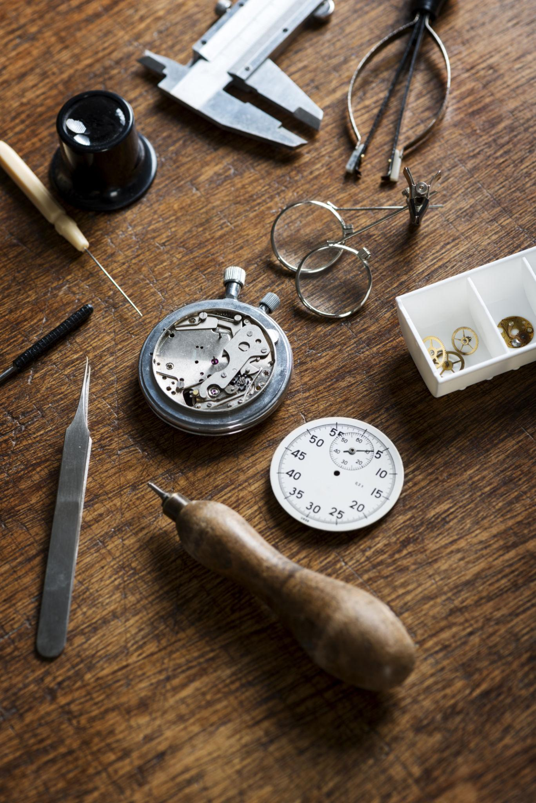
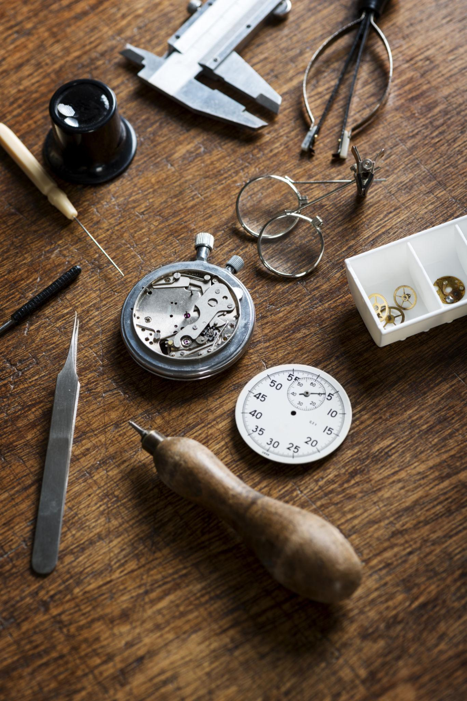

Independent Horologist
I carry out conservation led servicing and restoration of vintage mechanical timepieces, with a focus on careful handling, clean working practices, and controlled processes.
Work is approached methodically, with attention to the condition, originality, and long term serviceability of each piece. Interventions are kept proportionate and sympathetic, with the aim of preserving function while respecting the character and history of the watch.
Work is undertaken by appointment only.

Servicing and Conservation
Each watch is assessed on its own merits, with a structured service approach followed to ensure alignment with recognised best practice and conservation principles. The precise scope of work is guided by condition, construction, and prior history. Typical service activities include:
- Initial visual inspection and functional assessment of the watch in its received condition
- Documentation of condition prior to any intervention
- Careful disassembly using appropriate supports and controlled handling
- Cleaning of components to remove aged lubricants, residues, and contamination
- Inspection for wear, corrosion, damage, or evidence of prior incorrect work
- Rectification of issues where feasible and appropriate, with replacement limited to necessity
- Correct lubrication applied in the correct locations using high quality synthetic lubricants appropriate to the movement design
- Treatment of key components and jewels with Episurf-Neo surface treatment, to control oil spread, improve stability, and support consistent performance over extended service intervals
- Reassembly with staged functional checks throughout
- Regulation and performance observation appropriate to the age, construction, and intended use of the movement
- Final observation period and completion notes
Photographic records and short video clips are captured during key stages of the service process, providing a clear and traceable record of condition, intervention, and completion.
Case and movement restoration
Restoration work is guided by a conservation led philosophy, with careful consideration given to originality, material condition, and historical character. Where patina is stable and contributes positively to the appearance and integrity of a piece, it is retained. Intervention is reserved for cases where deterioration progresses beyond a desirable or stable vintage condition and begins to compromise function, protection, or long term preservation.
Case work includes controlled cleaning, surface preparation, and refinishing where appropriate. Chemical preparation processes are employed selectively to remove contaminants, corrosion products, or degraded surface layers, and to establish a stable and compatible base for subsequent finishing or protective treatments.
Where finishes have failed and base metals are exposed, appropriate electroplating is employed as part of a considered restoration strategy. Electroplating may be applied to cases and, where appropriate, selected movement components, with processes chosen to ensure material compatibility, controlled thickness, and long term durability, while remaining sympathetic to the original construction and appearance.
Finishing techniques are selected to suit the original design intent and condition of each component. These may include high polishing, fine satin or brushed finishes, matt finishing, starburst finishing, and other period appropriate surface treatments. Particular care is taken to preserve original geometry, edge definition, and surface transitions, avoiding unnecessary removal of material.
Movement restoration may also include stabilisation or cosmetic correction of selected components where this supports long term function, legibility, or protection. Such work is undertaken only where it can be achieved without compromising originality, serviceability, or future maintenance.


How I work
Work is undertaken by appointment only and accepted on a selective basis, ensuring that sufficient time and care can be given to each piece. The approach is deliberately measured and avoids production line practices, favouring careful, methodical work carried out at an appropriate pace.
Each watch passes through a distinct inspection and assessment phase. No quotation is provided at the outset. Following inspection, findings are communicated and the proposed approach is discussed in close consultation with the client, with decisions guided by condition, construction, and long term serviceability rather than by default scope or cosmetic preference. Only once this stage is complete is work scheduled and progressed.
Processes are carried out in a controlled working environment, with attention paid to cleanliness, correct tooling, and repeatability. Decisions on repair, restoration, or stabilisation are made with future maintenance in mind, avoiding unnecessary alteration or irreversible intervention, and maintaining a preference for proportionate and sympathetic treatment throughout.
Workshop details

 
